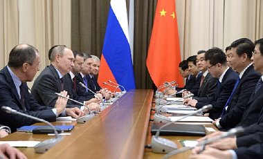

Китай не будет требовать у США возвращения долга в золоте
Очередным фейком от российских СМИ можно назвать сообщение о том, что Китай воспользуется правом «вето» на любое решение Совбеза ООН против России.
Во-первых, PolitOnline.ru, написавший об этом, ссылается на анонимные «источники в кулуарах» Организации объединенных наций.Как пишет издание, «дипломаты также добавили, что в ближайшее время Китай «поумерит геополитические амбиции США требованием погашать долговые обязательства США… золотом, которое у Америки «находится в ограниченном количестве»»».
Во-вторых, официальная позиция Китая, озвученная пресс-секретарем Министерства иностранных дел Китая, звучит так:
«Китай глубоко озабочен нынешней ситуацией в Украине.Мы осуждаем недавние экстремистские и насильственные действия там и призываем соответствующие стороны в Украине урегулировать свои внутренние споры мирными средствами в рамках правового поля таким образом, чтобы защищать законные права и интересы всех этнических общин в Украине и восстановить нормальную общественного порядка в ближайшее время.
Китай давно придерживается политики невмешательства во внутренние дела других стран.Мы уважаем независимость, суверенитет и территориальную целостность Украины.Для нынешней ситуации в Украине есть соответствующие причины.Китай будет внимательно следить за развитием ситуации и призывает соответствующие стороны добиваться политического урегулирования своих разногласий путем диалога и переговоров на основе уважения международного права и норм международных отношений в целях поддержания регионального мира и стабильности».
По материалам: www.fmprc.gov.cn.
Posted On: 2014-03-04T21:00:00

Content Date: 2014-03-04
Download Date: 2021-07-16
Document ID: L0C04F820